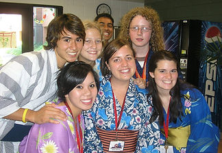

About the Film
This film is a story about Taylor Anderson and all the young people who travel the world trying to make a difference. Taylor was an extraordinary American who dedicated herself to teaching Japanese children, living her dream right up to the events of March 11, 2011.
The earthquake and tsunami in Japan was a disaster that no one could have expected. In my 21 years of working on Japan based projects, I had witnessed earthquakes, but never the devastation of a tsunami.

Bring Taylor's inspiring story home and share it with your family, classroom, or community.
Order the Film